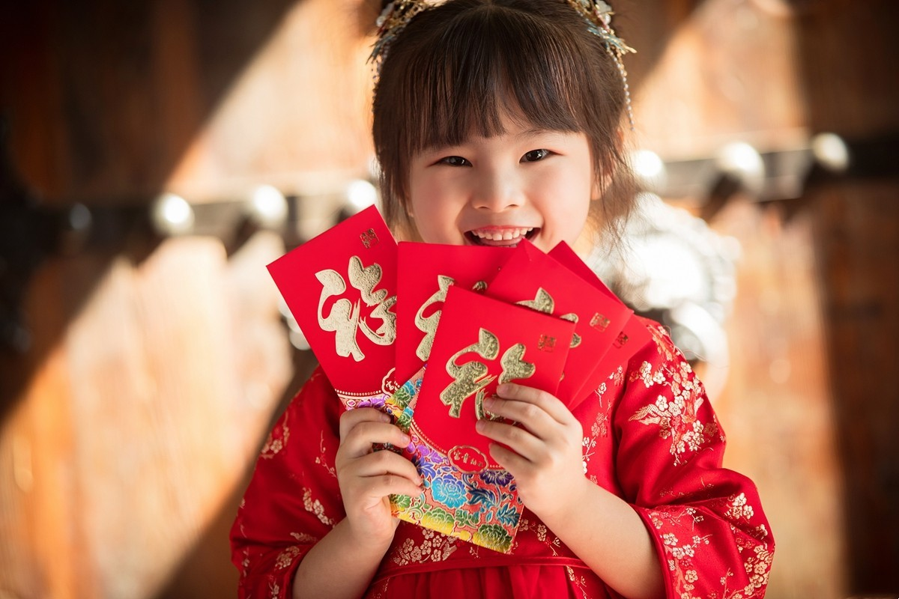

Tục lệ lì xì vào sáng mồng Một Tết là nét đẹp văn hóa không thể thiếu, tượng trưng cho lời chúc sức khỏe và sự sung túc. Những phong bao đỏ thắm che đi số tiền bên trong, nhắc nhở chúng ta rằng tình cảm và lời chúc tốt đẹp mới là điều quan trọng nhất. Trong năm Bính Ngọ 2026, những chiếc bao lì xì in hình linh vật chiến mã mạnh mẽ còn mang ý nghĩa chúc cho mọi người một năm "Mã Đáo Thành Công", gặt hái nhiều thắng lợi.
Ý nghĩa: Tượng trưng cho sự may mắn, trừ tà và lời chúc tốt đẹp cho trẻ nhỏ lẫn người già. Nét đẹp văn hóa: Người lớn mừng tuổi trẻ em học giỏi, ngoan ngoãn; con cháu mừng thọ ông bà sống lâu trăm tuổi.